2013 is now gone, but before we jump to 2014 with new hopes and resolutions, it’s time to take a look at some of the best bits from last year. We’ve already shown you the best Android, iOS, Windows Phone and Windows apps from last year, and now it’s time to look at browser extensions. So, let’s start with the most brilliant Google Chrome apps and extensions we covered in 2013. Some were simply updates that brought additional functionality to the table, some replaced Google’s boring New Tab page into something wonderful, while others simply made Chrome even better in other ways.
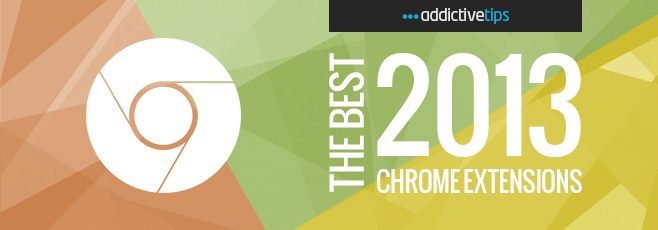
Note that the order of appearance of extension in this list is merely based on our coverage time, and does not reflect any ranking.
1. YouTube Couch Mode (Control YouTube and Vimeo playback from your iOS or Android device.)
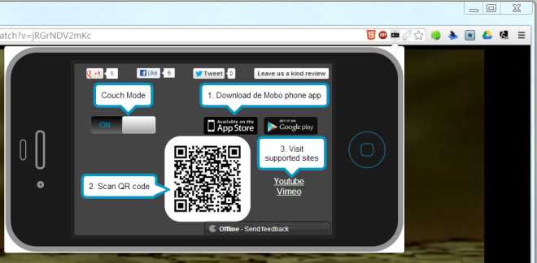
2. Surf (A BitTorrent extension that lets you search for and download torrents directly from within the browser.)
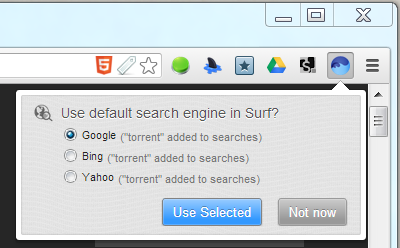
3. Chime (Get desktop notifications for Gmail, Twitter, Facebook, Reddit, LinkedIn, Quora, Github, Flickr, Stack Overflow, and Foursquare.)
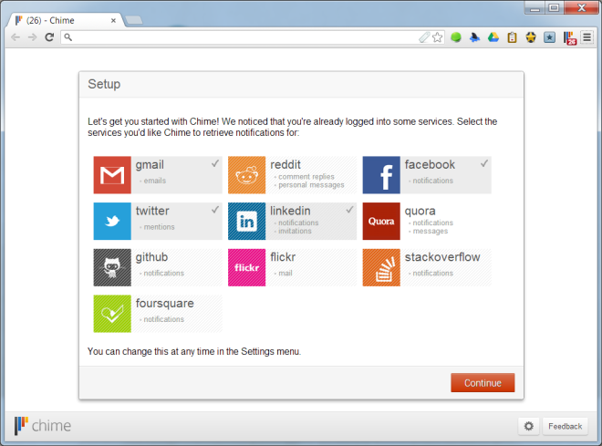
4. Google Multi-Account Launcher (Sign into and use multiple Google accounts within one Chrome window.)
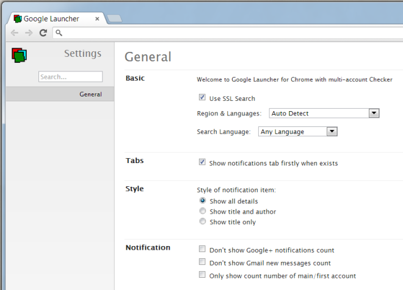
5. No Hulu Ads (Automatically mutes Hulu ads in Chrome, and then shows a desktop notification when the ad has ended.)
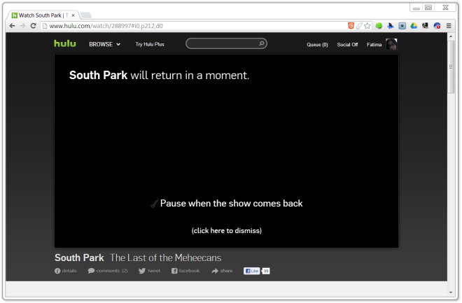
6. Smooth Key Scroll (Remove scrolling jitter in Chrome when scrolling the web pages using the keyboard arrow keys.)
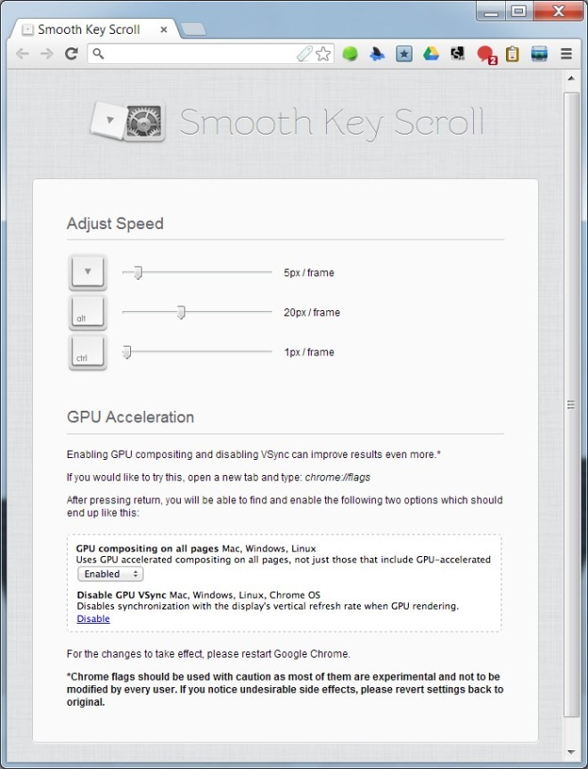
7. Cloudy (Attach files to your emails from a wide array of cloud services including Google Drive, Dropbox, Box, Facebook, Picasa, and more.)
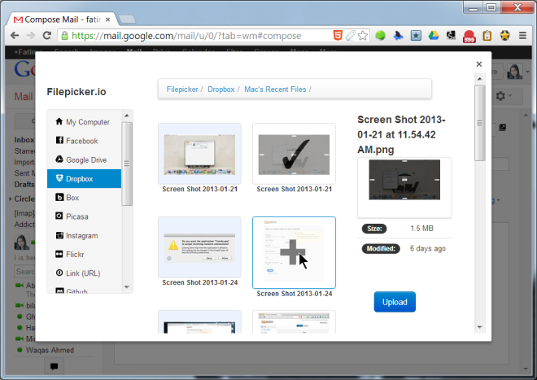
8. The Great Suspender (Suspend tab loaingd in Chrome to save memory and get smoother web browsing experience on old machines.)
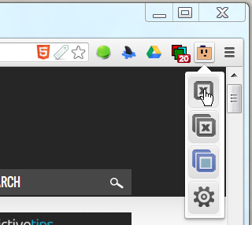
9. Dead Simple Screen Sharing (Stream any tab activity to any other web browser, even on mobile devices.)
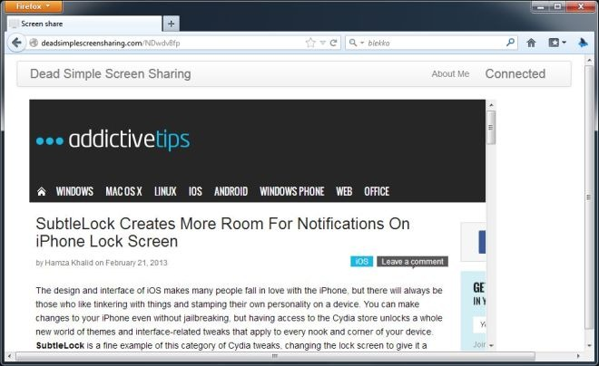
10. Image Size Info (Adds a ‘ViewImage Info’ option in the right-click context menu for images, allowing you to immediately view image size, dimensions and date.)
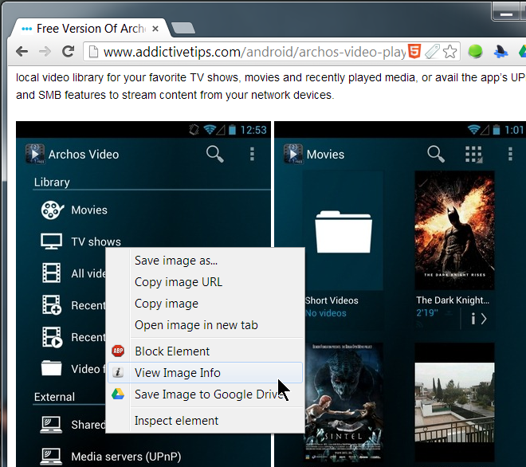
11. Holmes (Allows you to search through your bookmarks from Chrome’s Omnibar.)
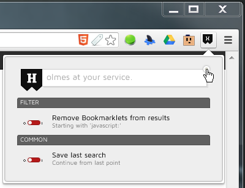
12. YouTube Lyrics (Lets you view song lyrics from Grooveshark and YouTube; also available Firefox, Safari, Opera and IE.)
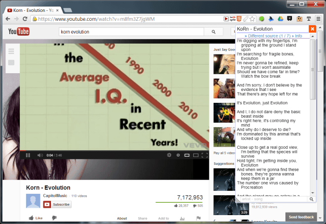
13. Text Mode (Hides obtrusive web page elements like images, videos and other content for a clean, distraction free browsing experience.)
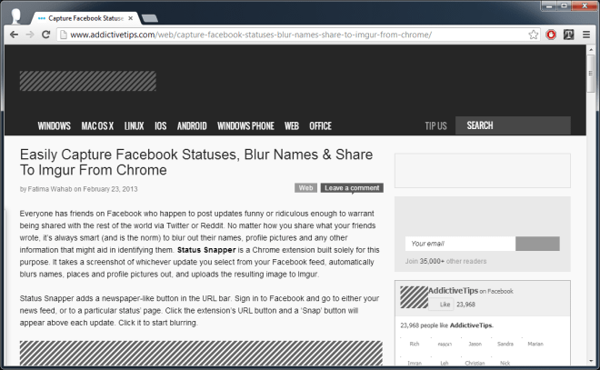
14. Video Tape (Makes embedded YouTube videos sticky so you may explore the rest of the page while not losing focus on the video.)
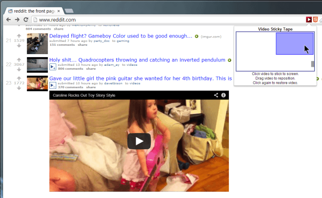
15. OX: Bookmarks (Stores all bookmarks you create to a dedicated folder in your Bookmarks bar, letting you manage them based on read/unread criteria.)
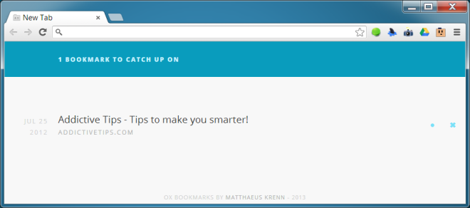
16. Magnifier For Facebook (View Facebook images in full size by hovering your mouse over them.)
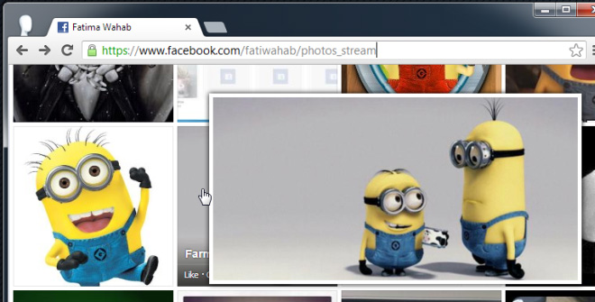
17. RapidReddit (Automatically opens very link you click on Reddit in a new tab, and removes clicked links from the main page.)
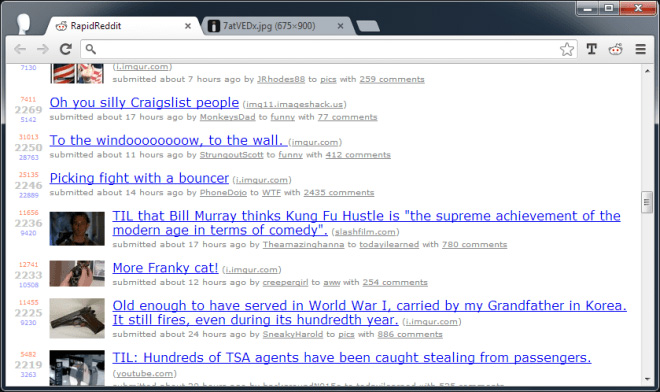
18. OneTab (Backup, restore, import and export Chrome tabs across computers.)
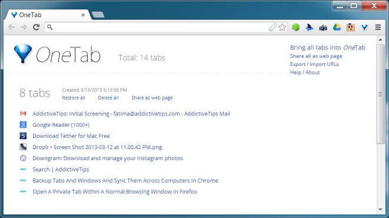
19. SnapPea Photos (Manage photos stored on your Android phone or tablet from your PC in Chrome.)
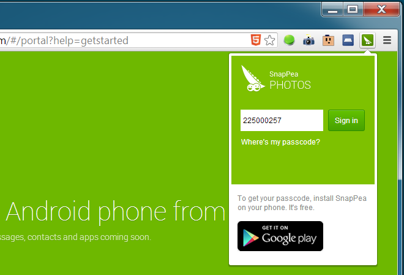
20. News Hub (A small news reader that lets you add feeds via RSS links or by manual search.)
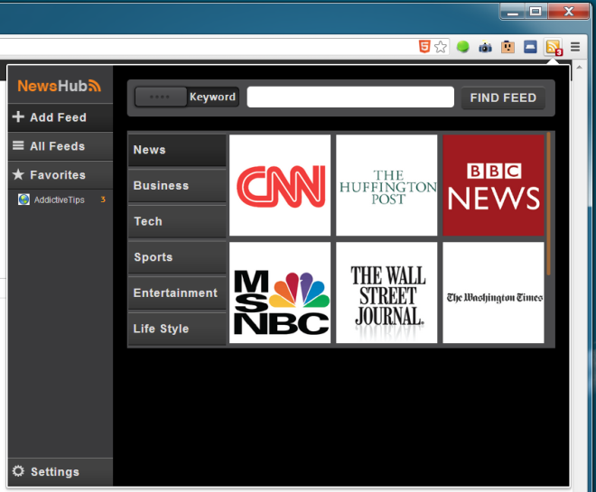
21. OmniTube (Lets you search YouTube from the Omnibar, providing suggestions as you type.)
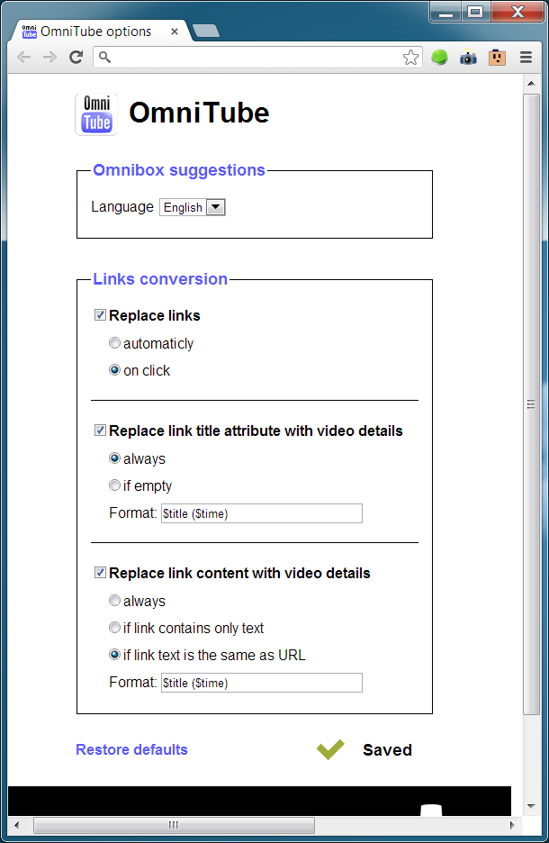
22. TabJuggler (Group or detach Chrome tabs into different windows, sorting them by title, hostname or URL.)
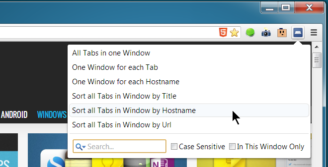
23. Intab (Open new links in a sidebar visible from the same tab; you can also adjust the sidebar’s width.)
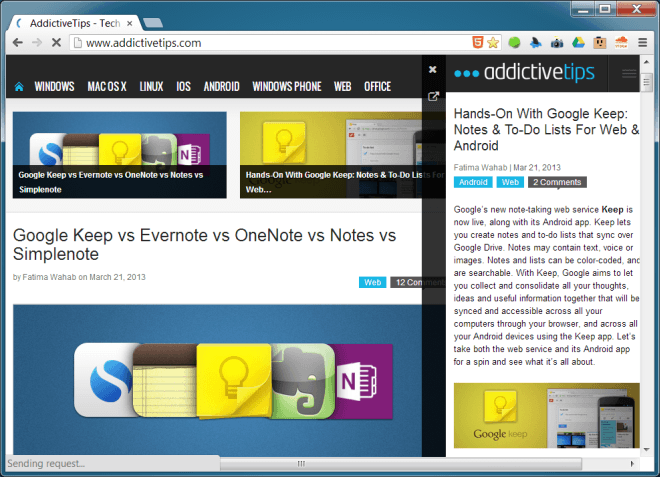
24. Quick Bookmarks (Swaps the default New Tab Page of Chrome with a grid of your bookmarks, complete with folders.)
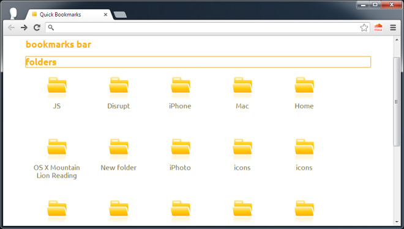
25. Scroll Marker (Adds a horizontal line to the web page at your lowest scroll position so you don’t lose the point in the article you were last reading.)

26. Tabman Tabs Manager (Allows you to easily search and switch between the tabs open in the current window from a menu.)
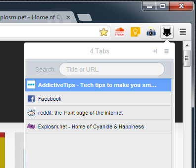
27. Tab to Windows Keyboard Shortcut (Separates tabs in a new window based on predefined sections of the screen.)
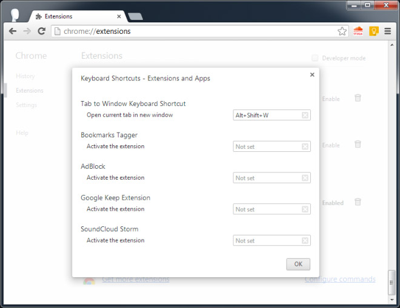
28. Chromoji (Replaces the block characters that would normally appear in place of Emojis with the real Emojis.)
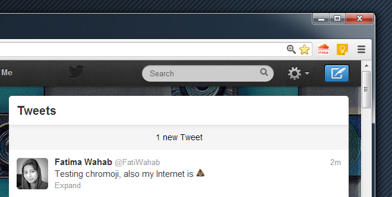
29. Feedly Reader (Gives a Google Reader-like interface to Feedly.)
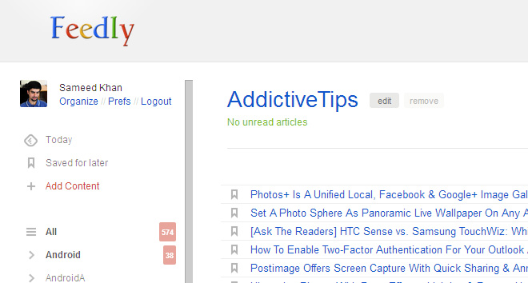
30. Sidewise Tree Style Tabs (An unconventional way of viewing Chrome tabs; also allows you to group or hibernate tabs.)
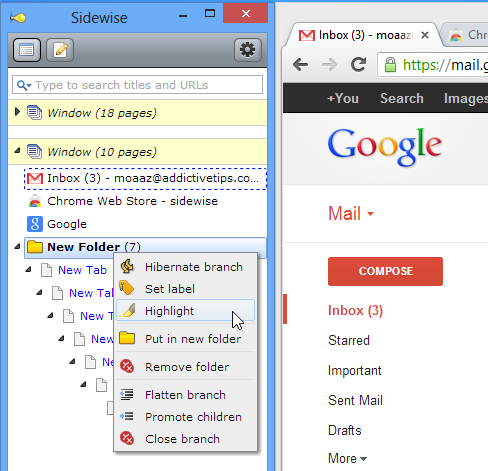
31. Chrome Office Viewer (Drag and drop your Word, PowerPoint, and Excel files into Chrome to view them.)
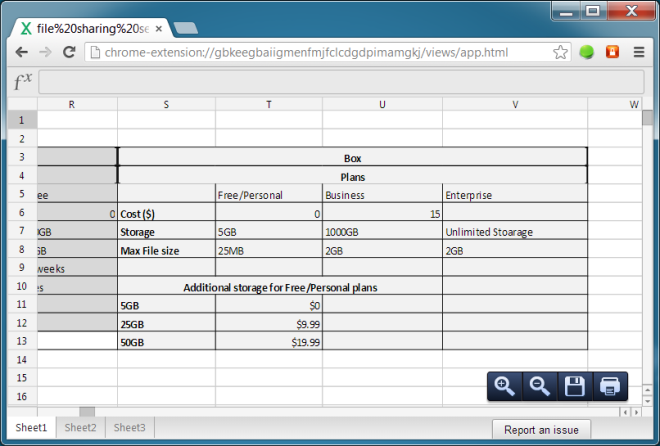
32. Recent Bookmarks (Quickly view your latest bookmarks in a list sorted by date.)
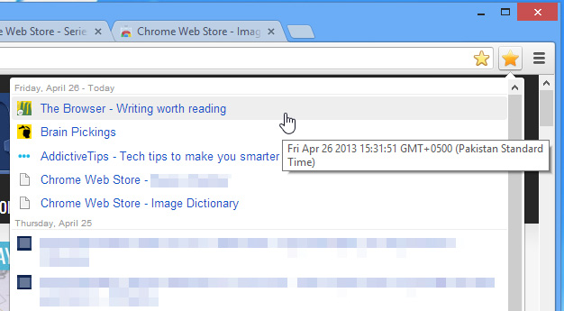
33. Print or PDF with CleanPrint (Trims all unwanted and obtrusive elements from webpages, making them clean and ready for print.)
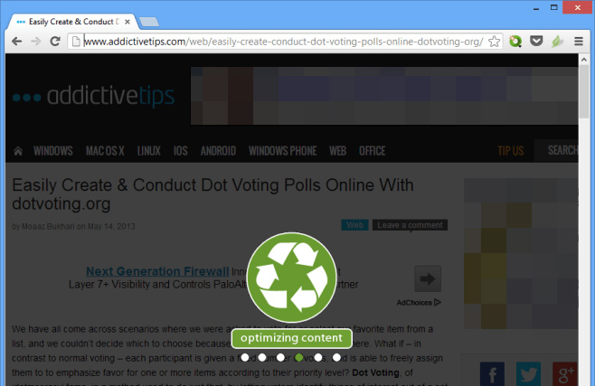
34. YouTube Video Deck (Lets you manage your YouTube videos and subscriptions in an entirely new way.)
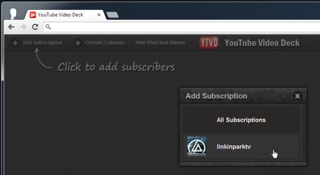
35. Fruumo (New tab page replacement with date & time, weather, RSS feeds and other useful information.)
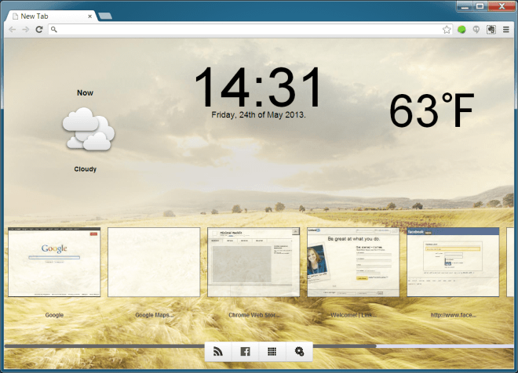
36. SoundControl (Control playback of Pandora, adds play, pause and skip song buttons.)
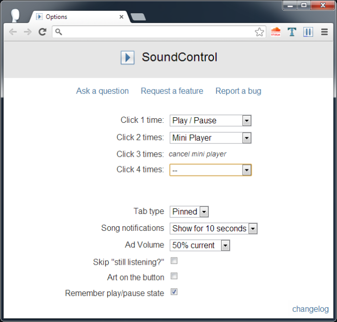
37. Mark As Read (Mark any online content as ‘Read’, ‘Reading’ or ‘Read later’ so that upon returning to it later, you recognize it instantly as such.)
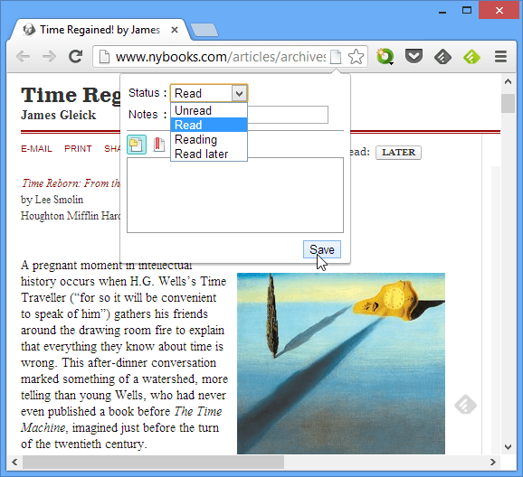
38. Cortex (Share content you find on the web with your friends on Facebook, Twitter, YouTube, and other social media accounts.)
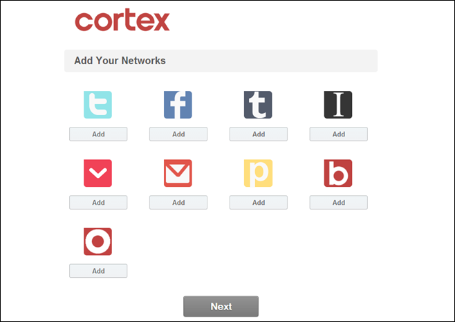
39. Middle Click Scroll (Quickly jump to the top or bottom of a webpage using your mouse’s scroll wheel and buttons.)
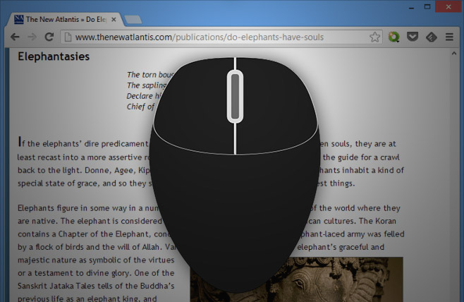
40. Do Not Track Me Facebook (Protect your privacy when browsing Facebook by preventing various tracking cookies from monitoring your activity.)
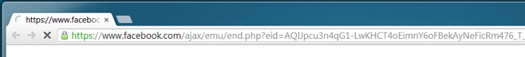
41. Black Menu (Places all Google apps and services in a simple, customizable panel for quick and easy access.)
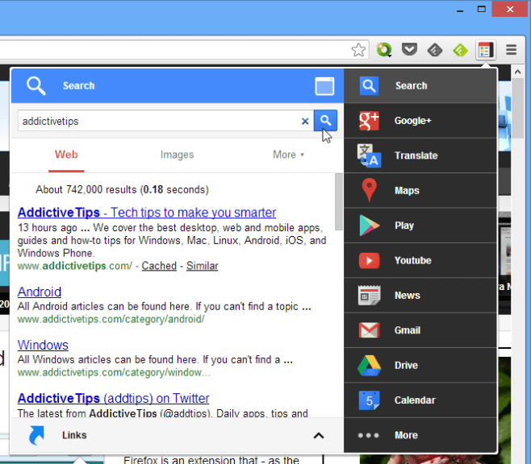
42. Disconnect (Blocks all tracking cookies, intrusive widgets and scripts on webpages to provide a distraction-free browsing experience.)
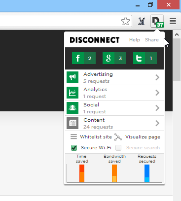
43. Silencer (Automatically hides updates from Facebook and Twitter that may contain spoilers of books, movies or TV shows.)
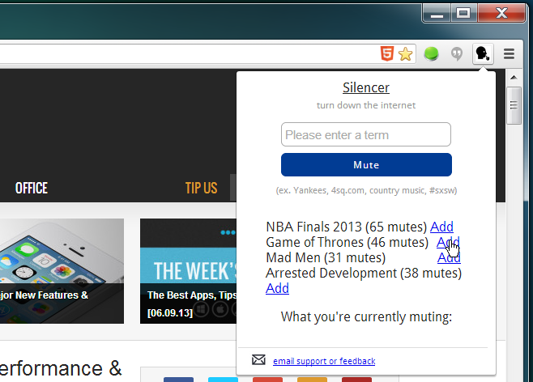
44. Incognito Tab Switch (Switch any Chrome tab between Incognito and normal modes.)
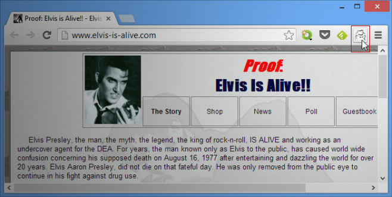
45. FooTab (Prevents tabs from automatically loading webpages until you manually click on them.)
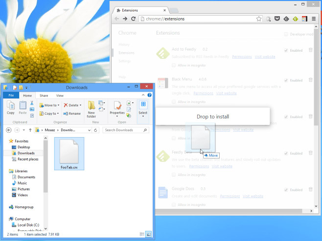
46. metroTab (Swaps the default new tab page with a Modern UI-based one, complete with live tiles and extra apps that mimic those in Windows 8.)
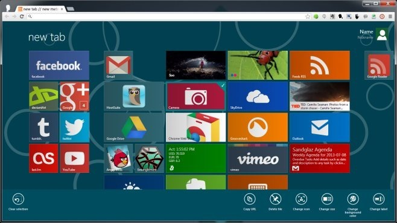
47. Omnibox Timer (Quickly set timers for different tasks and situations.)
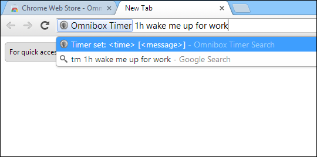
48. SimpleExtManager (Manage all your installed extensions, themes and apps from one single place.)
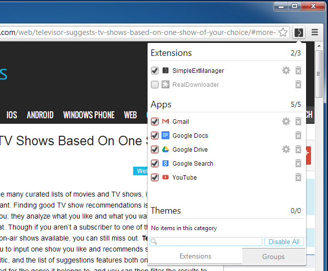
49. ViewTube (Keep YouTube in focus by opening it in a floating window; useful for viewing videos while surfing other websites.)
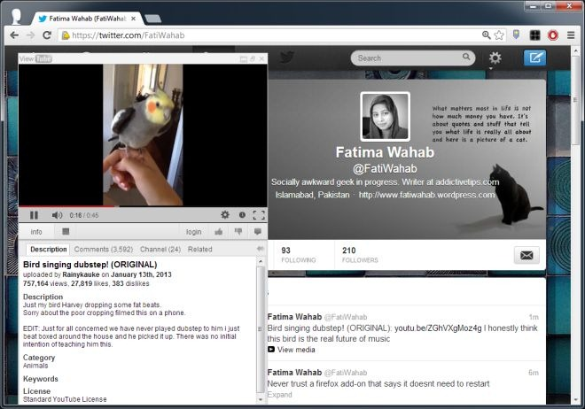
50. Clipboard Sync (Syncs your clipboard data between Chrome instances running on different PCs.)
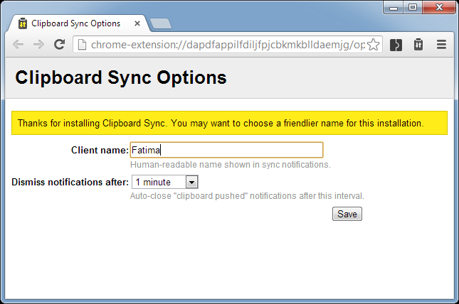
51. cottonTracks (Automatically curated record of the best content you browse.)
52. OneFeed (Another great new tab extension that shows you feeds curated from Facebook, Google+, Twitter and Instagram.)
53. Reader Filter ( Filter and hide news items in Feedly, The Old Reader, and InoReader using keywords or regular expressions.)
54. Lightning Newtab (Brings a smart speed dial to the new page for easily accessing your favorite sites with a single click.)
55. Responsive Inspector (Easily inspect and analyze responsive web page designs.)
56. PageEdit (Lets you modify web pages on the fly by turning the tab itself into a WYSIWYG editor.)
57. MakeGIF Video Capture (Create a GIF from any video that’s being played in an HTML5 player.)
58. Mikey For Gmail (Quickly find stuff in your Gmail account by sorting the items under relevant tabs.)
59. MetisMe Attachments Management System (Lets you conveniently manage email attachments from Gmail.)
60. Spot (instantly create events in your Google Calendar from the content you come across while browsing.)
61. Keeeb (Bookmark and sync certain pieces of information from web pages such as videos, photos and quotes.)
62. Facebook Unseen (Disable those pesky ‘Seen and ‘typing’ indicators in Facebook Chat.)
63. Video Resumer (Pause a YouTube video and then resume it later from the exact same point where you left of, upon restarting Chrome.)
64. Font Changer (Change the font styles of your favorite websites by defining your own custom font settings.)
65. Closed Tabs (Restore as many Chrome tabs as you want, in addition to selectively opening recently closed ones.)
66. Tab Resize (Easily split all your browser tabs into different windows in predefined or custom layouts.)
67. Veritabs (The perfect way to organize your tabs vertically, letting you scroll through the tabs list using your mouse wheel.)
68. NiftySplit (Open links in a new window, which appears side by side with the page you were browsing.)
69. JellyReader (Store you RSS feeds on your Dropbox or Google Drive account.)
70. OX (Replace the default Chrome new tab page with important information or urgent bookmarks that need more attention.)
71. Pixlr Touch Up (A feature-rich photo editor for fine-tuning your favorite images right within Chrome.)
72. Evernote Web Clipper (Update to the popular Evernote Web Clipper that brings many awesome new features to the table including screenshot capturing, annotation, and sharing options.)
73. Curiyo (Look up further information regarding anything you come across while browsing, using popular informational sites such as Wikipedia.)
74. Shiny Reddit (Browse reddit in a Pinterest-like UI.)
75. Boomerang Calendar (Injects new life into Google Calendar, letting you schedule meetings and events right from your Gmail inbox.)
76. iCloud Bookmarks (Sync your bookmarks between iOS, Chrome and Firefox.)

77. Identify Mask (Log into multiple accounts on the same website without entering Chrome’s incognito mode.)
78. Spot – Date Clipper for Google Calendar (Makes sure you never forget about any interesting events that you come across online.)
79. StartHQ (There’s no shortage of new tab extensions, but this one puts a few handy apps at your disposal, along with the ability to discover new sites from your friends.)
80. Dictionary Bubble (Instant Dictionary) (View definitions, synonyms and adjectives of words on any web page by double-clicking them.)
81. Scrollbar of Contents (Creates content-based section headings for pages along the scrollbar for easy in-page navigation.)
82. Reddit Hover Text (Allows you to view content of any Reddit when you hover the cursor over it.)
83. Nimbus Web Clipper (Another handy web clipping extension that lets you save images and webpages to the cloud.)

84. Grooveplayer (Control Grooveshark web player via a popup using Chrome’s experimental Panels feature.)

85. Looper For YouTube (Auto-repeat or loop an entire YouTube video or only a selected part of it, as many times as you wish.)
86. TabStats (Analyzes data about the tabs you’ve opened in Chrome, and presents some relevant stats about your browsing.)
87. Kloudless (Allows you to integrate multiple cloud storage services with Gmail.)
88. Latis (Store and manage useful snippets of text, images and other content from your favorite webpages as stacks.)
89. iChrome (Love using Google Now on your mobile? This extension brings a similar UI to Chrome’s new tab page.)
90. Vine For Chrome (Unofficial Vine extension that lets you access your Vine account and view Vines posted by others.)
91. Spotflux Safe Browsing (Encrypt your internet connection, and protecting you from common security and privacy threats.)
92. Google Voice Search Hotword (The official ‘OK Google’ hotword feature for triggering a voice search.)
")
93. Evercontact (Instantly save contact details from any website to Google, Outlook and other such services with a click.)
94. Fruumo Download Manager (Download manager for Chrome that carries several additional features not found in the default Downloads section.)
95. Gravity Highlighter (Displays relevant and related content suggestions based on the webpage you’re currently viewing.)
96. Momentum (New tab page replacement with captivating landscapes as background, and a big clock at the center.)
97. Video Pinner (Pin YouTube videos and make them sticky so you may scroll down to the comments without losing focus on the video.)
98. Streamus (A unique music player for YouTube videos that lets you play just their audio in a popup without visiting the website.)
99. Photon (A photo editor for Facebook based on Aviary that lets you edit photos within your Facebook account.)
100. SPOTS (An enticing new tab page replacement that puts loads of information, web apps, games and other content at your disposal.)
Check out our other year-end best-of compilations:
150 Best Windows Software Of Year 2013
100 Best iPhone & iPad Apps Of 2013
40 Best Windows Phone Apps Of 2013
50 Best Firefox Addons Of 2013